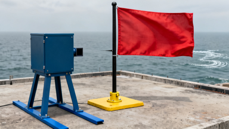
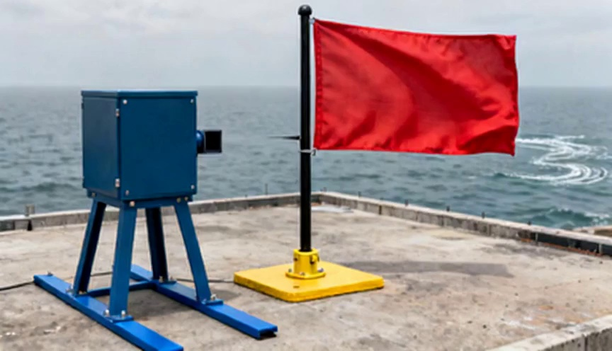

Semantic evaluation · Wind-driven flag deformation
Why do the judges give this video different scores?
MuseGlimmer and GPT evaluate the same flag video. Most of the difference comes from how they judge the evidence for airflow and whether the motion is clear enough to assess.
This page follows one example. It explains the recorded disagreement; it does not establish which judge is more accurate across the benchmark.
The video is fixed. One evaluator changes.
Released Seedance video · approximately 4 seconds. Both judges received the initial image and the same 12 sampled video frames.
Task given to the world model
Continue the calibrated fan airflow at 5.0 m/s.
The expected response is a flag deforming under continued airflow, with the blower, pole, and camera remaining stable.
The skill responsible for the difference
physical_response_verifier_vlm uses a vision-language model to answer eight questions about the physical response.
We substituted Muse-Glimmer-30B and GPT-5.5 for this semantic judge. The released skill selection and numerical metric outputs were held fixed.
Component of the case score
Muse
GPT
What changed?
Physical-response skill
0.3454
0.8083
The semantic judgments
Observation-skill average
0.8662
0.8662
Nothing; numerical evidence is shared
Case score: half of each component
0.6058
0.8373
Entire gap comes from the physical-response skill
Observation skills assess rendering, motion, appearance consistency, and physical plausibility. The separate physical-law validator returned “not applicable” for this example; it supplied no law-based score.
Check the visual claims before interpreting the score.
Claim about the background: “a new white wake appears”
Muse uses this claim to reduce its anchor-preservation judgment. Compare the sea at the right edge of these images.

Initial observation · the white wake is already present.

First generated frame · the wake remains visible.
Our visual assessment
The wake is not newly introduced. This particular explanation does not support a preservation penalty. This does not imply that every background detail is identical.
Claim about motion: an abrupt change between sampled frames
The judges’ first two video samples were frame 0 and frame 8, separated by one third of a second. They did not see frames 1–7. Use the control below to inspect those intervening frames.
Frame 0 · judge sampleFrame 8 · judge sample
Our visual assessment
The intervening frames show progressive changes in the flag’s folds and outline. They do not support the claimed near-teleport in this interval. Sparse still frames leave uncertainty about motion; they are not evidence of a hard cut.
The slow sequence is an inspection aid. The source video runs at 24 frames per second; the frames above are unannotated extractions from that video.
Question about airflow: what can the image establish?
Muse’s interpretation
The blower is visible, but its active airflow and calibration are not directly shown. Give little credit for a visible intervention.
GPT’s interpretation
The blower faces the flag, and the flag deforms. Accept this as indirect evidence of airflow, while withholding full credit for the exact speed.
What remains uncertain
The images do not establish an airflow speed of exactly 5.0 m/s. The judges differ in how much indirect evidence they accept. The prompt does not precisely specify how to convert this uncertainty into a score.
The disagreement appears in specific questions.
Each answer is a score from 0 to 1. Higher means the judge considers that criterion better satisfied. Select a question to read both recorded explanations.
Verify question
Muse
GPT
Changing this selector displays a different recorded experiment. It does not run a model in your browser.
Two judgments multiply the rest of the score.
The calculations below use the experiment where each judge received its own Analyze output. The formula has three factors. Evidence for the intervention and judgeability scale the entire response-and-preservation subtotal. Lower values in these factors therefore have a large effect.
Intervention groundingaverage of Q1 and Q2
×
JudgeabilityQ8
×
Response and preservationweighted subtotal of Q3–Q7
Muse’s recorded calculation
0.625 × 0.750 × 0.736875 = 0.345410
GPT’s recorded calculation
0.875 × 1.000 × 0.923750 = 0.808281
Inspect the formula’s sensitivity
Start with Muse’s judgments. Substitute GPT’s recorded answer to either question below, keeping all other answers fixed.
Recalculated skill score0.625 × 0.750 × 0.736875
This is a formula-only sensitivity calculation, not another model run. Substituting both answers still leaves Muse’s response and preservation judgments unchanged.
These coefficients are fixed in the released code. They are not selected separately for this video. The implementation rounds intermediate values to six decimal places.
Where does Analyze enter this disagreement?
Analyze
Reads the initial image and action. Writes an expected physical-response specification. Produces no score.
→
Verify
Reads the original task, Analyze reference, and video samples. Produces the eight question scores.
→
Aggregation
Applies the fixed formula to those scores. Combines the skill result with the observation average.
For this skill, Verify is explicitly told that the original case specification is authoritative and Analyze’s specification is only an audit reference.
Muse’s own Analyze output adds preservation of sea-water texture. Its Verify explanation then invokes that requirement when penalizing the wake. This suggests a possible influence from Analyze, but a single run cannot establish causation.
Recorded experiment
Muse skill score
GPT skill score
Each judge’s own Analyze output
0.3454
0.8083
Identical shared Analyze output
0.4419
0.8083
With the shared specification, Muse stops penalizing anchor preservation, but a substantial gap remains. Different Analyze outputs are therefore not necessary for the judges to disagree. The score change also includes possible run-to-run variation.
What this example demonstrates
The same video can receive substantially different scores because judges interpret visual evidence differently, and the formula amplifies differences in visibility and judgeability. On this example, Muse’s wake explanation is contradicted by the initial image, and its early-motion explanation is not supported by the intervening frames. This is evidence about these particular judgments—not a general ranking of the models.
Evidence and experimental scope
This analysis uses saved outputs from Muse-Glimmer-30B and GPT-5.5 on one released video. No additional judge inference was performed for this explanation. The shared-specification requests contain identical Verify messages and image references; the models use different inference configurations. There is no human ground-truth score for this comparison.